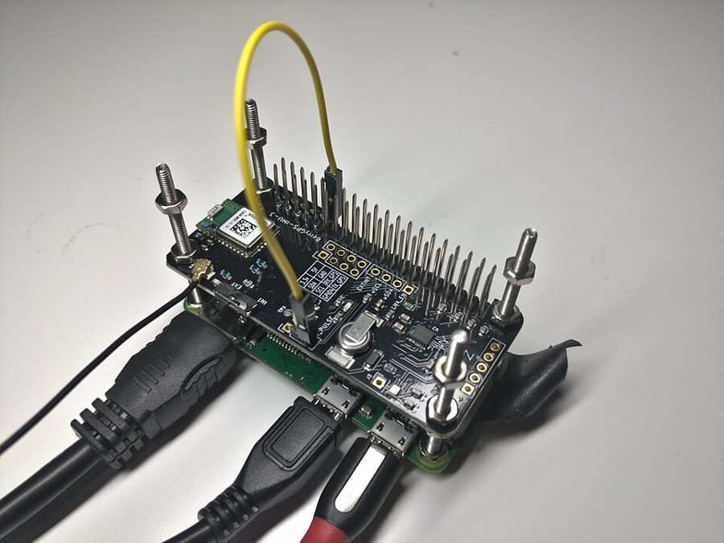

这一章在做什么
一台机器上的程序要么正常，要么整个崩掉；几台机器用网络连起来，就会出现一部分坏、其余照常的「部分失效」，而且常常说不清坏的是哪部分。这一章只摆问题：网络会丢包、会无限期延迟，检测故障只能靠超时；时钟会漂、会跳，拿它给事件排先后很危险；进程随时可能停顿几十秒，醒来还以为什么都没发生。后半讲在这种条件下怎样推理：让多数派替单个节点做判断，用防护令牌挡住过期的持锁者，用系统模型把假设写清楚。
读之前：先预测
第 6 章讲复制时留了几个尾巴：故障转移要靠超时判断主节点死没死，两个节点可能都以为自己是主（脑裂），「最后写入者胜」会悄悄丢掉写入。原因都要到这一章才摆出来：网络、时钟、进程停顿。第 8 章的快照隔离要一个单调递增的事务 ID，这一章讲能不能拿同步过的时钟来当它。下一章（第 10 章）开始讲解法：线性一致性、逻辑时钟和共识。书里说，共识算法里的选票号（Paxos）、任期号（Raft）和这一章的防护令牌起的作用类似。
一个导出服务用租约保证同一时刻只有一个实例往对象存储里写当天的对账文件。租约 20 秒，实例 A 每隔几秒看一眼租约还剩多久，不够就续。某次 A 刚看完（还剩 18 秒），紧接着碰上一次 25 秒的垃圾回收停顿。A 醒来之后最可能发生什么？
一个多主复制的键值库用「最后写入者胜」（LWW）解决冲突，时间戳取写入所在节点的系统时钟。节点 P 的时钟比真实时间快 80 毫秒，节点 Q 的时钟是准的。用户先在 P 上把收货地址改成「东门」，30 毫秒后又在 Q 上改成「西门」。两次写都复制到所有节点之后，地址是什么？
一个节点只能靠收到（或没收到）的消息去猜别的节点的状态，连「现在几点」「我是不是还被当成活着」都没法确知。在这样的条件下，系统怎样保证不做错事？
- 发出请求迟迟没有回音，可能是哪几种情况？为什么超时设多长没有「正确答案」？§2§2.4
- 两种时钟各适合回答什么问题？拿时间戳给不同节点上的写排先后，危险在哪？§3.1§3.3
- 持租约的节点停了几十秒，醒来接着写。谁能挡住它，凭什么？§3.4§4.2
- 安全性和活性有什么区别？为什么分布式算法对前者要求得更严？§4.4
这一章的骨架
这一章前半是一份「坏事清单」，按三种不可靠排：网络（§2）、时钟（§3.1–3.3）、进程停顿（§3.4）。§4 换了个角度：既然什么都靠不住，一个节点能「知道」什么、该信谁。容易乱的是租约的例子：它在 §3.4 开头出场（停顿怎么让租约失效），到 §4.2 才接着讲怎么防。读 §4.2 之前，回头看一眼 §3.4 的开头。
本站画的全章结构。§2.5 和 §3.4 后半各有一段「能不能干脆从硬件上解决」的岔路，答案都是能，但贵。
边读边填：每行一个问题，读到答案就写一两句。只存在你这台设备的浏览器里，别人看不到。
读完了？对照我找到的
- 超时的取舍：短了会把只是慢一下的节点判死，转移负载可能引发连锁故障；长了真挂了要等很久。只能长期测往返时间的分布来定，或按观测到的抖动自动调（如 Phi Accrual）。
- 电话网的保证：建立通话时沿路预留固定带宽（电路），不用排队；数据中心的流量是突发的，按需共享利用率高、便宜，代价是排队。
- 两种时钟：单调时钟，只往前走，差值就是经过的时间；日历时钟可能被 NTP 强行拨回或拨快，算出来的时长可能是负的。
- LWW 丢写：它打的时间戳比时钟快的节点之前写的值还小，在两边的时钟差走完之前都覆盖不了，而且不报错。
- Spanner 在等什么：等一个置信区间的宽度，让以后读到这份数据的事务的区间和它不重叠；GPS 和原子钟把区间压到约 7 毫秒。
- 令牌由谁检查：存储服务，记住处理过的最大令牌，拒绝更小的；也可以用条件写（类似 CAS）代替。
- 现实用哪种模型：部分同步加崩溃-恢复。
分节地图
全章约 1.8 万词（不算代码和图注），建议分四次读。第一次全是网络，读着顺；第二次的 §3.3 是时钟部分的重心；第三次从进程停顿一路读到防护令牌，中间别断；第四次偏理论，§4.4 的几个定义值得慢读。
- 第一次坐下§0–§2.5 · 约 5300 词 · 部分失效和不可靠的网络
- As discussed in “Reliability and Fault Tolerance”…约 300 词开篇为什么要把悲观调到最大；全章的路线：网络、时钟，再到怎样推理。
- Faults and Partial Failures约 600 词故障与部分失效单机为什么被设计成「要么好、要么全坏」，多台机器为什么做不到。
- Unreliable Networks约 500 词不可靠的网络发出请求没有回音，可能是哪几种情况，为什么分不清。
- The Limitations of TCP约 600 词TCP 的局限TCP 说的「可靠」可靠到哪一步，哪些事它管不了。
- Network Faults in Practice约 500 词现实中的网络故障几项研究和一串轶事：网络故障有多常见、多古怪。方框区分网络分区和分片。
- Fault Detection约 400 词故障检测什么时候能拿到明确的「它挂了」，大多数时候为什么拿不到。
- Timeouts and Unbounded Delays约 1100 词超时与没有上限的延迟超时设多长；延迟的波动从哪几处排队里来；超时为什么只能靠测。
- Synchronous Versus Asynchronous Networks约 1200 词同步网络与异步网络电话网能保证延迟，数据中心为什么不学它。抓住方框里「利用率」那条线。
- 第二次坐下§3–§3.3 · 约 3700 词 · 不可靠的时钟
- Unreliable Clocks约 300 词不可靠的时钟应用拿时钟回答两类问题：一段时长，和一个时间点。
- Monotonic Versus Time-of-Day Clocks约 600 词单调时钟与日历时钟两种时钟各保证什么、不保证什么，各适合做什么。
- Clock Synchronization and Accuracy约 800 词时钟同步与精度一串让时钟出错的原因：漂移、NTP、闰秒、虚拟机、用户自己改时间。
- Relying on Synchronized Clocks约 2000 词依赖同步的时钟用时间戳排先后会出什么事；读数为什么该看成区间；Spanner 怎么用这个区间。
- 第三次坐下§3.4–§4.2 · 约 4200 词 · 停顿、多数派、租约和防护令牌
- Process Pauses约 1900 词进程停顿持租约的主节点停顿会怎样；停顿从哪来；实时系统和减轻 GC 停顿的办法。
- Knowledge, Truth, and Lies约 400 词知识、真相与谎言节点只能靠消息去猜别人的状态。引出「系统模型」这个词。
- The Majority Rules约 500 词多数说了算一个节点为什么不能信自己的判断；多数派为什么安全。
- Distributed Locks and Leases约 1400 词分布式锁与租约两个客户端同时以为自己持锁怎么办：防护令牌，以及它在多副本上的用法。
- 第四次坐下§4.3–§5 · 约 5100 词 · 撒谎的节点、系统模型、怎么验证
- Byzantine Faults约 1200 词拜占庭故障节点会撒谎时难在哪；什么场合才需要防，本书为什么默认不防。
- System Model and Reality约 1600 词系统模型与现实时间和故障各有几种假设；安全性与活性；模型和现实对不上时怎么办。
- Formal Methods and Randomized Testing约 1600 词形式化方法与随机化测试模型检查、故障注入、确定性模拟测试，各测什么、各有什么盲区。
- Summary约 700 词小结全章回顾。先自己回忆一遍再读它。
先用中文过一遍
没有回音：发生了什么，只能猜
你给另一台机器发了一个请求，迟迟没有回音。毛病可能出在三个地方。回来的路上：对方其实已经处理完了，回应丢了或者堵在半路，这时请求已经生效，你却不知道。对方那边：进程崩了，或者正卡在一次很长的垃圾回收里，过一会儿还会回话。去的路上：请求丢了，或者还在某个交换机的队列里排着，晚些照样会送到。从发送方这一头看，这些情况一模一样：只有「还没收到」。用了 TCP 也一样，TCP 的确认只说明对方的内核收到了数据，不说明对方的程序处理了它。
唯一普遍可用的办法是超时：等够一段时间，就当它挂了。难处在于这种网络的延迟没有上限。包要在交换机里排队，在对方的操作系统里排队，在虚拟机监视器里排队，TCP 自己还会为了不压垮网络在发送端排队；负载越接近满，队排得越长。所以往返时间的分布拖着一条长尾巴，超时线画在哪都是取舍：画得靠左，偶尔慢一下的活节点会被判死，它的活转给别人，可能把本来就忙的系统压垮；画得靠右，真挂了要等很久才发现。
本站画的示意图，形状是编的，只为说明长尾。真实的分布要在你自己的机器上长期测，负载越高尾巴越长。
两种时钟，和一件不该交给时钟的事
每台机器上都有一块石英晶体在计时，它会随温度快一点、慢一点，叫漂移。机器靠 NTP 定期向时间服务器对表，对表的精度又受网络延迟所限。程序能读到两种时钟：日历时钟（time-of-day clock）告诉你现在几月几号几点，和 NTP 对齐，但可能被一下子拨回去或拨过去；单调时钟（monotonic clock）只保证一直往前走，绝对值没有意义，两次读数的差就是经过的时间。测超时、测耗时用单调时钟；要和别的机器比时间，只能用日历时钟，也就得接受它的误差。
危险在于拿日历时钟给不同节点上的事件排先后。比如「最后写入者胜」（LWW）：同一个键有两个版本，留时间戳大的那个。只要两个节点的时钟差比两次写的间隔还大，真正后发生的写就会因为时间戳小而被扔掉，而且不报任何错。更老实的看法是承认读数有误差：把「现在」看成一个区间 [最早, 最晚]。两个区间不重叠，先后就确定了；重叠了就说不准。
本站画的示意图，数字是编的。书里说多数系统读时钟时根本不告诉你这个区间有多宽，Spanner 的 TrueTime 和 Amazon 的 ClockBound 是例外（§3.3）。
拆开的晶体振荡器（Kyocera KXO-01，16.257 MHz）。中间那片圆形的就是石英晶体。计算机的时钟靠这样的振荡器计数，书里说它的漂移随温度变化（§3.2）。Marcin Andrzejewski，CC BY-SA 3.0，维基共享资源

有人用树莓派 Zero W 加一块 GPS 扩展板搭的 NTP 时间服务器，从 GPS 信号取时间，再发给网络里的其他机器。书里说 NTP 服务器的时间来自更准的源，比如 GPS 接收器（§3）。Steven Baltakatei Sandoval，CC BY-SA 4.0，维基共享资源
停顿的持锁者和防护令牌
很多系统要求某件事同一时刻只有一个人做：一个分片只能有一个主，一个文件只能有一个写者。常用的办法是租约（lease）：一把带过期时间的锁，持有者要定期续；它崩溃了、不再续，租约就自然过期，别人可以接手。
问题出在持有者自己的判断上。它看一眼「租约还剩 18 秒」，下一行代码去写，可就在这两行之间，进程停了 25 秒：一次让所有线程暂停的垃圾回收、虚拟机被挂起或迁移、一次卡住的磁盘读写、一次换页，都可能。它醒来时不知道自己停过，接着写；而租约早已过期，另一个客户端拿到租约正在写。这种「以为自己还持有租约」的前持有者叫僵尸（zombie）。指望它自觉不可靠，把它关掉也来不及，所以要让它写不进去：锁服务每授予一次租约，就附带一个递增的数字，叫防护令牌（fencing token）；客户端每次写都带上它，存储服务记住见过的最大令牌，比它小的一律拒绝。
本站画的示意图，令牌号和时刻是编的。关键在下半：判断「这次写还算不算数」的，是存储，而不是写的那一方。
先说清楚假设：系统模型
一个分布式算法在什么样的世界里正确？把假设写下来，就是系统模型（system model）。时间方面常用三种：同步（延迟、停顿、时钟误差都有固定上界）、部分同步（大多数时候有上界，偶尔被打破）、异步（不许做任何时间假设，连时钟都没有）。节点故障方面：崩溃-停止（坏了就再也不回来）、崩溃-恢复（会回来，盘上的东西还在，内存丢了）、拜占庭（什么都可能做，包括撒谎）。书里还专门提了一种难缠的：节点没死，只是慢得没法干活。
有了模型，「正确」用性质（property）来定义，分两类。安全性（safety）大致是「坏事不发生」：一旦违反，能指出是哪一刻，而且没法挽回，比如发出了两个相同的令牌。活性（liveness）大致是「好事终会发生」：定义里常带着「最终」二字，此刻没做到，将来还有希望。这一对概念的用处，是让你在故障面前分清哪些承诺必须守住、哪些可以附带条件。
本站画的示意图。一个系统模型就是在上面两排里各选一格；算法的正确性，是说在这个模型允许的所有情况下，它要的性质都成立。
这一章点名的系统
Spanner分布式数据库 用 TrueTime 报告的时钟区间做跨数据中心的快照隔离，提交前故意等一个区间宽度。
ClockBound时钟服务 Amazon 的，读时钟时返回最早、最晚两个值；书里说 YugabyteDB 在 AWS 上可以用它。
Cassandra、ScyllaDB数据库 书里的例子：直接用客户端时钟的时间戳加 LWW，省掉一次读。
ZooKeeper协调服务 当锁服务用时，事务 ID（zxid）或节点版本（cversion）可以当防护令牌。
etcd协调服务 revision 号加上租约 ID，起防护令牌的作用。
Chubby锁服务 Google 的锁服务，防护令牌在这里叫 sequencer。
Jepsen故障注入框架 书里说它在许多广泛使用的系统里找到过严重的 bug。
TLA+规格语言 写算法规格、交给模型检查器验证的语言之一。
FoundationDB分布式数据库 确定性模拟测试的先驱之一，建在一个叫 Flow 的异步通信库上。
Antithesis测试工具 用自制的虚拟机监视器，把整台机器变成确定性的。
| 英文 | 中文 | 一句话 |
|---|
| partial failure | 部分失效 | 系统的一部分坏了、其余照常，而且坏没坏都说不准（§1）。 |
| network partition | 网络分区 | 网络的一部分和其余部分断开。和数据分片不是一回事（§2.2）。 |
| timeout | 超时 | 等多久没回音就当对方挂了；几乎唯一可靠的故障检测手段（§2.4）。 |
| unbounded delay | 没有上限的延迟 | 异步网络不保证包多久送到，可以任意慢（§2.4）。 |
| time-of-day clock | 日历时钟 | 返回日期和时间，和 NTP 对齐，可能被拨回（§3.1）。 |
| monotonic clock | 单调时钟 | 只往前走，用来测时长；不同机器的读数不能比（§3.1）。 |
| clock drift | 时钟漂移 | 石英钟走快或走慢，随温度变化（§3.2）。 |
| last write wins (LWW) | 最后写入者胜 | 冲突时留时间戳最大的写，其余悄悄丢弃（§3.3）。 |
| lease | 租约 | 带过期时间的锁，持有者要定期续（§3.4）。 |
| quorum | 法定人数 | 要几个节点投票才算数的决定，最常见的是过半（§4.1）。 |
| split brain | 脑裂 | 两个节点同时以为自己是唯一的那个主（§4.2）。 |
| fencing token | 防护令牌 | 每次授予锁都递增的数字，存储据此拒绝过期持有者的写（§4.2）。 |
| Byzantine fault | 拜占庭故障 | 节点不按协议行事，甚至撒谎（§4.3）。 |
| system model | 系统模型 | 对网络、时钟、节点故障的假设；算法在它之内证明正确（§4.4）。 |
| safety / liveness | 安全性 / 活性 | 「坏事不发生」和「好事终会发生」两类性质（§4.4）。 |
动手：模拟器
先猜：租约 10 秒，A 在第 3 秒续约，第 4 秒起停顿 15 秒。它醒来之后，还会写几次才发现自己已经不是持有者？存储会接受这几次写吗？打开防护令牌之后呢？再猜一个：停顿 7 秒和停顿 8 秒，结果会不会不一样？猜好了，一秒一秒地点着看。
模拟器租约、进程停顿与防护令牌
两个客户端 A、B 争一把租约，拿到的才能写存储。A 先拿到（令牌 7），每 3 秒为一轮：查一次租约（够就续），再写两次。B 一直等着，租约一过期就接手（令牌 8），接手的那一秒马上写一次。先点「前进 1 秒」。
- 默认参数（租约 10 秒、停顿 15 秒、不开防护令牌）一秒一秒走到底。A 醒来时，它自己以为的和锁服务那边的实际情况各是什么？存储里哪几格变红了？
- 打开防护令牌再走一遍。A 的过期写入被谁拒绝、凭什么？为什么 A 马上就退下了，不用等到下一次查租约？
- 停顿改成 7 秒、8 秒各走一遍，差一秒，结果为什么不同？把租约加长到 15 秒，能「解决」停顿吗？再换成「写在网络里滞留」试试：A 根本没停顿，防护令牌为什么照样有用？
词与短语
词条按在书里出现的顺序排，按节分组；读一节之前先把这一节的过一遍，读的时候就不用停。斜体小字是原句里连续的几个词，在电子书里搜它就能找到那一句。标着「每个字都认识」的，是字面意思会把你带偏的。行话（quorum、lease 这类）不在这里，在上面的术语表里。
§0 As discussed in “Reliability and Fault Tolerance”…
happy path
… to focus mostly on the happy path …
一切顺利、不出错的那条执行路径
设计和测试里的常用说法；和它相对的是各种出错的分支（edge cases）。
new and exciting ways
… in lots of new and exciting ways …
各种新花样（反话）
exciting 是反讽：出错的方式「新颖刺激」，对写代码的人一点也不好玩。
up against
… the challenges we are up against …
面对的、要对付的
be up against 是「面临（困难、对手）」，不是「靠着」。
turn our pessimism up
… turn our pessimism up to the maximum …
把悲观调到最大
像拧音量旋钮，turn up 是调高。
§1 Faults and Partial Failures
having a bad day
… the computer is sometimes “having a bad day” …
今天状态不好
把电脑拟人化。作者紧接着说，这多半只是软件写得差，不是机器真有情绪。
flaky
… on a single computer should be flaky …
时好时坏、不稳定
本义是一碰就掉渣。flaky test 指时而通过、时而失败的测试。
get away with
… we can get away with ignoring it …
（做了本不该做的事却）侥幸没事
这里：数据静默损坏很少见，所以不管它也能过得去。
may well be
… there may well be some parts …
很可能有
may well 是「很有可能」，比 may 更肯定，不是「也可以」。
§2.1 The Limitations of TCP
plug it back in
… TCP can’t plug it back in for you …
（替你）把网线插回去
玩笑话：线被拔了，TCP 再怎么重传也没用。
§2.2 Network Faults in Practice
anecdotal evidence
… plenty of anecdotal evidence show that …
零散的亲历见闻（不是系统研究）
anecdote 是轶事。常和 systematic studies 对举，意思是「不严谨，但很多」。
be blamed on
… have been blamed on cows, beavers …
被归咎于
scavenging
… accidental misconfiguration, scavenging, or sabotage …
（为卖废料）挖找废金属
本义是在废弃物里翻捡能用的东西；和光缆中断放在一起，指有人挖地找废金属去卖，顺带把埋着的线缆挖断。和 sabotage（蓄意破坏）并列：一个是无心，一个是故意，都是人为造成的中断。
there is no way around it
… there is no way around it …
躲不开、绕不过去
§2.3 Fault Detection
out of rotation
… take it out of rotation …
从轮流分发的名单里摘掉
rotation 指负载均衡器轮流派请求的那份名单，不是「旋转」。
be ruled out
… This option is ruled out if …
（这个办法）用不上、被排除
count on
… but you can’t count on it …
指望、依赖
不是「数」：count on someone 是靠得住某人。
strike a balance
… you need to strike a balance between …
在两者之间取得平衡
§2.4 Timeouts and Unbounded Delays
throw off balance
… to throw the system off balance …
打乱、让（系统）失去平衡
throw 在这里是「使陷入某种状态」，不是扔。
drain a queue
… spare capacity can easily drain queues …
把队列消化完、排空
drain 本义排水，也用于 drain a node（把节点上的请求处理完、不再派新的）。
noisy neighbor
… someone near you (a noisy neighbor) …
吵闹的邻居
云上和你共用同一批硬件、正在大量占用资源的其他租户。
§2.5 Synchronous Versus Asynchronous Networks
opportunistically
… connection opportunistically use whatever network bandwidth …
有空就用、见缝插针地
没有中文「机会主义」的贬义，就是「有什么用什么」。
push and jostle
… Senders push and jostle with one another …
你推我挤
a law of nature
… are not a law of nature but …
自然规律、天经地义的事
作者在说：延迟不定是人选出来的，不是非这样不可。
bear a resemblance to
… bear a closer resemblance to circuit switching …
和……相像
bear 在这里是「带有、具有」，不是熊，也不是忍受。
that said
… That said, internet routing operates …
话虽如此
句首的让步，后面要给前一句打折扣。
§3 Unreliable Clocks
a tricky business
… time is a tricky business, because …
一件棘手的事
business 在这里是「事情」，不是生意。
§3.1 Monotonic Versus Time-of-Day Clocks
with a pinch of salt
… with a pinch of salt …
打个折扣听，别全信
也说 with a grain of salt。作者对「单调」这个保证都留了一手。
§3.2 Clock Synchronization and Accuracy
fickle beasts
… NTP can be fickle beasts …
喜怒无常、靠不住的家伙
beast 在口语里指难对付的东西，不是野兽。
go unnoticed
… may go unnoticed for some time …
没人察觉
bet something on
… to bet the correctness of your systems …
把……押在……上
a stranger on the internet
… told by a stranger on the internet …
网上的陌生人
指公网上的 NTP 服务器。口吻是调侃：你的系统对不对，取决于一个素不相识的人告诉你几点了。
sneak into
… to sneak into a system …
不知不觉地混进来
sneak 是偷偷溜进；这里的主语是错误的假设，不是人。
§3.3 Relying on Synchronized Clocks
mysteriously disappear
… Database writes can mysteriously disappear …
莫名其妙地消失
tiebreaker
… An additional tiebreaker value (which can …
打平时用来分胜负的附加值
tie 是平局。比赛里的加赛、抽签都是 tiebreaker。
untenable
… distributed system becomes an untenable bottleneck …
撑不下去的、站不住的
本义是（阵地）守不住。
§3.4 Process Pauses
conspire to
… may even conspire to combine their delays …
（像串通好了一样）凑到一起
conspire 本义密谋。这里拟人：两种停顿碰巧叠在一起，延迟更长。
inopportune
… because of an inopportune GC pause …
不合时宜的、偏偏在这时候的
§4 Knowledge, Truth, and Lies
border on
… Discussions of these systems border on the philosophical …
近乎、接近于
border 当动词：挨着边。
the meaning of life
… figuring out the meaning of life …
人生的意义
玩笑：讨论虽然近乎哲学，好在不用弄清人生的意义。
§4.1 The Majority Rules
kicking and screaming
… dragged to the graveyard, kicking and screaming …
拼命挣扎、连踢带喊
常形容被迫做极不情愿的事。这一段整段是葬礼的比喻，读的时候别当真。
stoic determination
… procession continues with stoic determination …
面不改色、不为所动
abide by
… must abide by the quorum decision …
服从、遵守
step down
… the quorum decision and step down …
退位、让出（主节点的）位置
不是「走下来」：领导辞职也说 step down。
§4.2 Distributed Locks and Leases
prone to misuse
… are prone to misuse and are …
容易被用错
come back to life
… client 1 comes back to life …
「活」过来
这里只是停顿结束、接着运行，不是真的重启。
§4.3 Byzantine Faults
subvert
… deliberately wanted to subvert the system’s guarantees …
（暗中）破坏、颠覆
play by the rules
… playing by the rules of the protocol …
守规矩
to the best of its knowledge
… To the best of its knowledge, it …
就它所知
意思是：它说的可能是错的（信息过时了），但它不是故意骗人。
in their midst
… hampered by traitors in their midst …
（叛徒）就在他们中间
hampered 是受阻、被拖累。
not such a good idea
… was not such a good idea …
不怎么好的主意（其实是很糟）
往轻里说，要反着读：用某个真实民族命名，是会得罪人的。
hopefully
… so they can hopefully be trusted …
但愿（能信得过）
作者留了余地：自己机房的节点「应该」可信，不打包票。
full-blown
… are not full-blown Byzantine fault tolerance …
完整的、十足的
本义是花完全开放。
determined adversary
… withstand a determined adversary …
铁了心要搞破坏的对手
determined 是「下定决心的」，不是「确定的」。
§4.4 System Model and Reality
reckon with
… we have to reckon with the fact …
正视、把……考虑进去
limping node
… called a limping node, gray failure …
「瘸腿」的节点
limp 是一瘸一拐地走：还活着、还能回话，就是慢得干不了活。
erratic
… worn-out SSDs can have erratic performance …
忽快忽慢、没有规律的
a giveaway
… A giveaway is that liveness properties …
一眼就能认出来的标志
giveaway 也是赠品，这里是「露馅的地方」。
you guessed it
… And yes, you guessed it …
没错，你猜对了
口语。作者在逗读者：最终一致性正是一种活性。
read too much into
… to not read too much into those …
过度解读
come back to bite you
… come back to bite you again …
回过头来坑你
bite 是咬：当初忽略的东西后来让你吃苦头。
boil down to
… that handling boils down to …
归根到底就是
像熬汤熬到只剩一点。
quite the opposite
… system models are worthless—quite the opposite …
恰恰相反
前面先说「这不是说……没用」，再用它把话扳回来。
§4.5 Formal Methods and Randomized Testing
prudent
… It is prudent to combine theoretical …
审慎的、明智的
go out of sync
… go out of sync with each other …
对不上、各走各的
这里说的是规格和代码，改了一边忘了另一边。
from the ground up
… are built from the ground up …
从一开始就（按这个目标）设计
不是「从地面往上」：意思是不靠后来打补丁。
first-class
… OLTP database with first-class DST support …
原生的、一等的（支持）
技术英文里 first-class 指被当成核心功能对待，不是「头等舱」。
§5 Summary
let alone
… let alone on anything more profound …
更不用说
连现在几点都谈不拢，更别提更深的事。
Pandora’s box
… avoid opening Pandora’s box and …
潘多拉的盒子
一打开，麻烦就收不回去了。这里指走上分布式这条路。
bring to its knees
… bring a distributed system to its knees …
把……搞垮
字面是逼得跪下。
到这里先停下，去读原书下面是读完再看的：你的预测对不对、几道换成你来选的判断题、值得细读的句子和理解检查。先看了，读书时就只是在找答案。
读完：回到你的预测
书里的答案是第三项（§3.4、§4.2）。没有任何东西会告诉一个线程它刚停过：它的下一行代码就是写，要等下一次看时钟才可能发现租约早过期了。§3.4 用租约的例子讲这一点，停顿恰好发生在检查租约和处理请求之间；§4.2 讲后果：两个客户端都以为自己持有租约，写在一起把文件写坏。第一项错在线程醒来不会被通知；第二项错在 A 停着的时候什么都做不了，就算有通知也没人处理；第四项错在存储服务本来不知道租约这回事，除非它检查防护令牌。想一想：如果锁服务每次授予租约都附带一个递增的令牌，A 带着旧令牌的写到达存储时，结果会变吗？
书里的答案是第二项（§3.3）。LWW 只比时间戳：P 的时钟快 80 毫秒，Q 那次写虽然真的晚了 30 毫秒，时间戳却小 50 毫秒，于是被当成旧值扔掉，应用收不到任何错误。书里把这叫写入莫名其妙地消失：时钟慢的节点，要等时钟差走完之后才能覆盖时钟快的节点写过的值。第三项是另一类做法（版本向量那一套，保留并发的值），要额外跟踪因果关系，LWW 不做；第五项听着合理，但 LWW 恰恰不看到达顺序。想一想：两次写的间隔从 30 毫秒拉长到 200 毫秒，答案会变吗？
判断题：换成你来选
场景都是本站编的。先选，再看解释；解释里写了对应的节号，拿不准就回原书看那一节。
超时该怎么调？§2.4
场景：一个跨两个机房的订单服务用心跳判断节点死活，超时 300 毫秒。平时往返 2 毫秒，但每天晚上跑对账批任务时，偶尔有几秒钟往返涨到 500 毫秒以上，接着就是一串「判死 → 主从切换 → 又切回来」，有一次还连锁拖垮了整个集群。
延迟没有上界，超时只能靠测：在足够长的时间、足够多的机器上测往返时间的分布，再在检测速度和误判之间取舍；更好的是像 Phi Accrual 那样按观测到的抖动自动调。缩短超时只会误判得更多，把负载转给本来就忙的节点，正是连锁故障的来路。2d + r 只在延迟有保证的上界时才成立，拿平均值去算更没有意义。书里还提到，冗余的网络设备减少故障的效果没有想象中大，何况这里的问题是排队，不是设备坏了。
这些「改了不生效」是哪一类问题？§3.2§3.3
场景：一个无主复制的库存库用客户端时间戳加「最后写入者胜」。某台应用服务器被一条新加的防火墙规则挡住了 NTP。三周后客服反映：经这台服务器处理的库存调整「有时不生效」，没有任何报错，重试也一样；同一个商品从别的服务器改就正常。
书里列的正是这种情形：节点被防火墙隔开 NTP，漂移越积越大，一时没人发觉；时钟慢的节点写的值要等时钟差过去才能覆盖别人的值，而且不报错。复制延迟过一会儿自己就好了，重试不会一直不生效；写不到足够多的副本，客户端通常会收到超时或失败；拜占庭指节点不守协议，这台服务器是诚实的，只是时钟错了。书里的建议是监控各节点之间的时钟偏差，偏得太多的节点直接摘掉。
这段限流代码该改哪里？§3.1
场景：一个接口限流器每来一个请求就读一次系统时间（Unix 毫秒数），和上次的读数相减，算出过去了多少毫秒，据此补充令牌。上线后某天凌晨，日志里出现「过去了 -1200 毫秒」，那一分钟里所有请求都被拒绝了。
相减算时长，正是单调时钟的用途：它保证只往前走，差值就是经过的时间。日历时钟和 NTP 差得太多时会被强制重设，看上去就是时间倒流，闰秒也会造成跳变。精度再高也挡不住跳变；关掉 NTP，时钟会一直漂下去；每次都去核对既慢，读回来的时间又受网络延迟影响。
怎样最可靠地防止汇总表被写坏？§4.2
场景：几台报表机器抢一把分布式锁（租约 30 秒），抢到的那台生成当天的汇总表，写进对象存储里的同一个对象。最近偶尔发现汇总表里混着两台机器写的数据。排查发现每次都伴随一次 40 秒左右的 GC 停顿。
前三项都在和时间赛跑：停顿可以比任何租约都长；「写之前再查一遍」挡不住查完和写之间的那次停顿，也挡不住在网络里滞留很久才到的旧请求；关机往往来不及，书里还说它挡不住延迟到达的请求，几台机器还可能互相关掉。防护令牌把判断放在存储那一侧：存储记住见过的最大令牌，旧令牌的写一律拒绝，不管它停了多久、在路上走了多久。对象存储的条件写能起同样的作用。
要不要换成拜占庭容错的协议？§4.3
场景：公司内部一个 5 节点的配置中心，跑在自己的机房里。安全组提议换成一种拜占庭容错的共识协议，理由是「这样即使有一个节点被黑，或者软件出了 bug，也不会出错」。
书里说，多数拜占庭容错算法要求超过三分之二的节点正常（4 个节点最多容忍 1 个坏的），想用它防 bug，就得有几套彼此独立的实现。攻击者能攻破一个节点，多半也能攻破其余跑同样软件的节点，所以认证、访问控制、加密、防火墙仍是主要防线。这类协议很贵，在数据中心里通常不划算，更适合多方互不信任、没有中央权威的场合。丢包和拜占庭故障是两回事：前者节点是诚实的，只是消息丢了。
和本站其他书对照
超时、重传和端到端OSTEP 第 48 章那一章从「怎么在不可靠的网络上做可靠通信」讲起：发送方分不清请求丢了还是确认丢了，只能超时重传。它的端到端论证，正对应 §2.1 那句「要确认请求成功，得要应用自己回话」。那里有一个可以单步的泳道图模拟器。
去那一页 →
单机上的锁OSTEP 第 28 章单机上的锁靠硬件原子指令和共享内存，持锁的线程停多久，锁都还是它的。§3.4 说这些工具搬不到分布式系统里：没有共享内存，只有会丢会慢的消息，锁只好变成会过期的租约。
去那一页 →
换页和抖动OSTEP 第 22 章§3.4 把换页列为进程停顿的来源之一，内存压力大时系统可能大部分时间都在换进换出（抖动）。OSTEP 那一章讲抖动是怎么来的，以及操作系统怎么用准入控制应对。
去那一页 →
值得停下来的句子
In distributed systems, suspicion, pessimism, and paranoia pay off.— §1。本站译：在分布式系统里，多疑、悲观和偏执是有回报的。
这句话定下了全章的姿态。写单机程序时，「这种情况几乎不会发生」是一个合理的理由；在足够大的分布式系统里，百万分之一的事每天都在发生，而且发生时往往不报错，只是悄悄写错数据。读后面的每一节，都可以拿这句话问一遍：如果我假设的那件事偏偏不成立，会坏在哪里？
The moral of these stories is that a node cannot necessarily trust its own judgment of a situation.— §4.1。本站译：这几个故事的教训是，一个节点未必能相信自己对局面的判断。
这一句是全章从「问题」转向「怎么想」的枢纽。前面的网络、时钟、停顿，归结起来都是「一个节点看到的不一定是真的」。由此推出后面两件事：重大决定交给多数派，而不是某一个节点；被多数派判死的节点要服从，而它写进去的东西，要由存储用防护令牌来把关。第 10 章的共识，就是在这个前提上搭起来的。
检查一下理解
1.（§1）单机为什么被设计成「要么正常、要么整个崩掉」？分布式系统为什么做不到？
错误的结果比崩溃更难处理，所以单机遇到内部故障宁可整个停下，对外呈现一个确定、理想化的模型。多台机器通过网络相连时，一部分坏、一部分好是常态，坏没坏还常常说不准，只能在软件里去容忍它。
2.（§2.1）收到了 TCP 的确认，能不能说明对方已经处理了请求？
不能。确认只说明对方的操作系统内核收到了数据，应用可能在处理之前就崩了。要确定请求成功，得要应用自己回一个明确的成功响应。
3.（§2.4）系统已经过载时，过早地判定一个节点死亡，为什么会让情况更糟？
它的工作要转给别的节点，给它们和网络加了负担。如果它只是因为过载才慢，转出去的负载会让更多节点变慢、被判死，形成连锁故障，极端情况下所有节点互相宣布对方死亡。
4.（§2.5）书里说网络延迟不确定「不是自然规律」，那它是什么？
是一笔成本和收益的账：静态预留资源（像电话网的电路）能保证延迟，但闲着的带宽也不能给别人用，贵；动态共享利用率高、便宜，代价是排队和延迟波动。多数系统选了便宜的那边。
5.（§3.3）为什么说时钟读数更像一个区间？区间的宽度由什么决定？
读数可以精确到微秒，误差却可能是几毫秒到上百毫秒，小数点后那几位没有意义。宽度取决于时间来源：上次同步以来的石英漂移、NTP 服务器自己的误差、到服务器的往返时间。多数系统不告诉你这个误差，TrueTime 和 ClockBound 是例外。
6.（§4.1）一个节点被多数派宣布死亡，可它觉得自己好好的，该听谁的？多数派为什么安全？
听多数派的，自己退下。任何时刻系统里只可能有一个多数派，不会同时出现两个做出互相冲突的决定。
7.（§4.2）新拿到租约的客户端，为什么要马上写一次存储？
存储只有处理过一次带新令牌的写，才知道最大令牌已经涨了，才会拒绝旧令牌。这次写完成之前，僵尸带旧令牌的写还可能被接受。
8.（§4.4）「令牌不重复」和「请求令牌的节点最终会收到回应」分别是哪类性质？怎么区分？
前者是安全性，后者是活性。安全性一旦被违反，能指出是哪一刻、无法挽回；活性在某一刻不满足，将来仍可能满足，定义里常带「最终」。分布式算法通常要求安全性在任何情况下都成立，活性可以附带条件。
用一句话说这一章（写给一个没读过的朋友）：
精彩回顾
一句话：网络、时钟、进程都靠不住，一个节点什么都不能确知；能做的是把假设写清楚，让多数派和令牌替单个节点做判断。
只有「还没收到」请求丢了、在排队、对方崩了、对方在停顿、回应丢了：发送方看到的都是同一件事。唯一的办法是超时。
§2
超时没有正确值延迟没有上界。超时短了会把活节点判死，还可能引发连锁故障；长了发现得慢。只能长期测，或按抖动自动调。
§2.4
延迟不定是一笔账电话网预留带宽，延迟有保证但浪费；包交换按需共享，便宜但要排队。不是物理定律，是成本取舍。
§2.5
慢时钟的写会消失用 LWW 和各节点自己的时钟，时钟慢的节点写的值会被时钟快的节点写过的旧值压住，没有任何报错。
§3.3
Spanner 先等一等时钟读数是一个区间。提交前等一个区间宽度，让前后两个事务的区间不重叠；GPS 和原子钟只是把区间压窄。
§3.3
醒来的僵尸进程可能在任何一行停几十秒，醒来不知道自己停过。挡住它的不是它的自觉，而是存储检查递增的防护令牌。
§4.2
多数说了算一个节点不能信自己的判断。被多数派宣布死亡，就得退下；任何时刻只可能有一个多数派。
§4.1